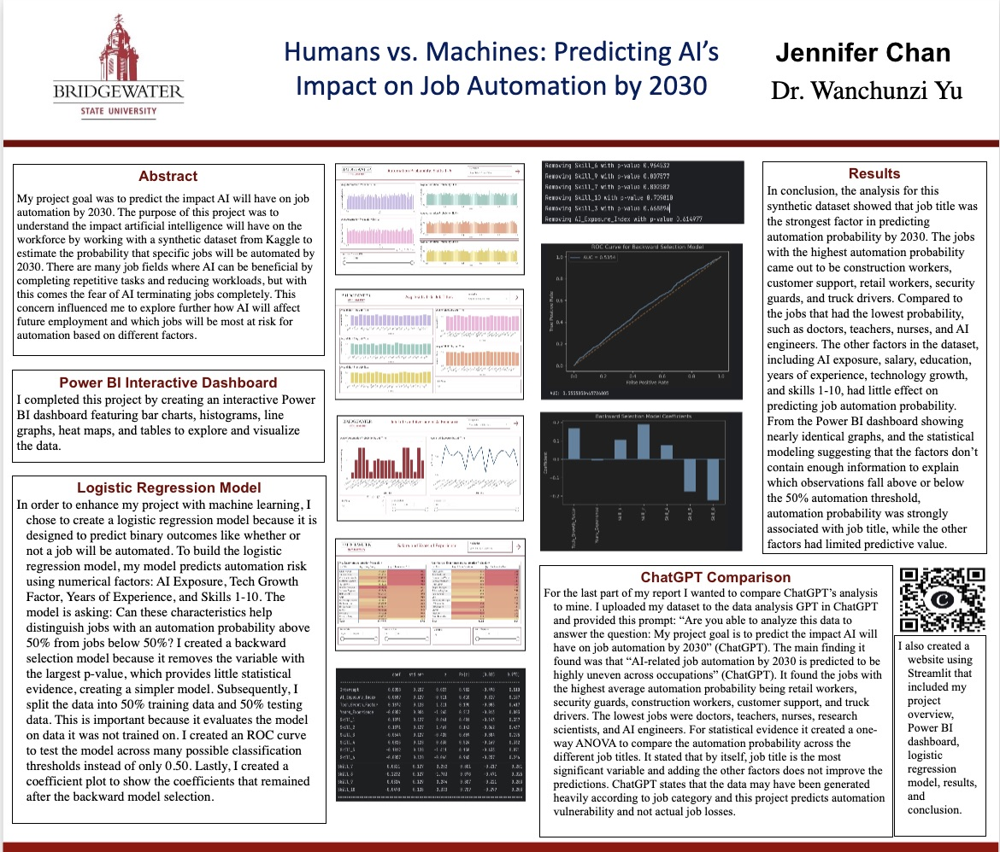
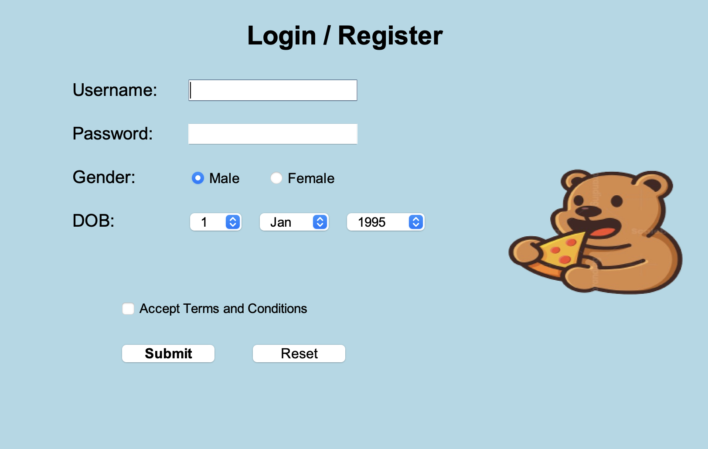
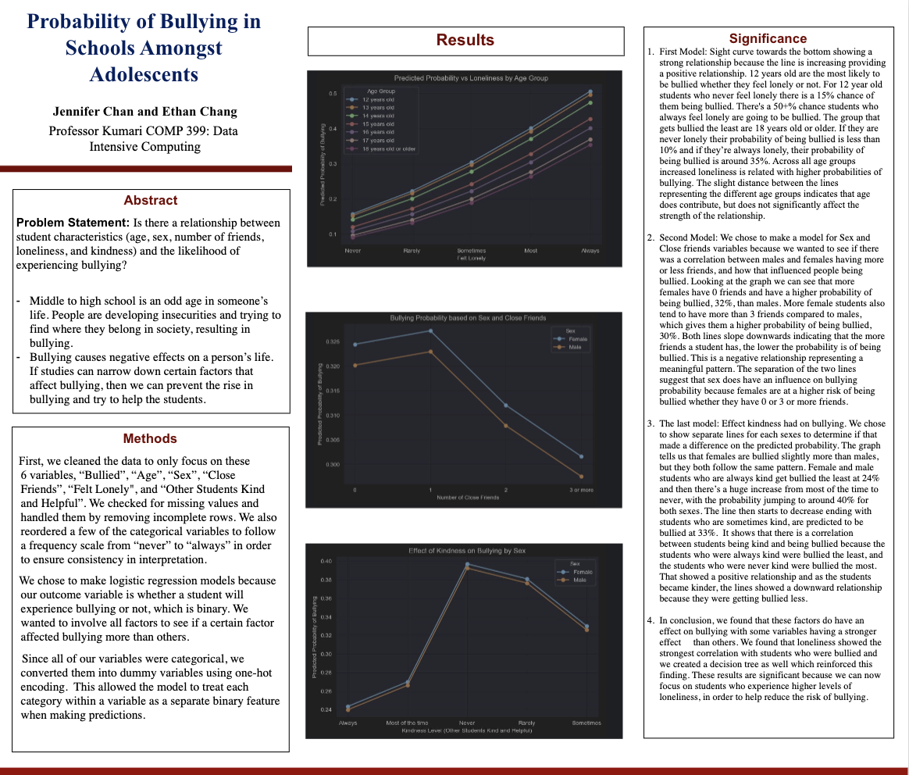

For our final project, Lily and I will be making a website about music recommendations. We were thinking about doing mood recommendations where users can choose between different moods and we will recommend songs based on that. Another option we were thinking about was having the user pick a genre, and we will recommend songs based on the genre picked.